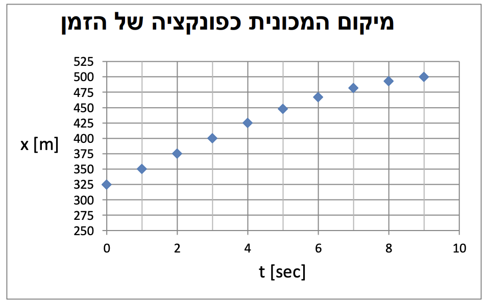

שאלה 1
מכונית נעה לאורך כביש ישר. היא מתחילה את תנועתה מנקודה A המוגדרת כראשית הצירים, ומסיימת אותה בנקודה B. הכיוון החיובי בשאלה מוגדר ימינה.
המהירות המרבית המותרת בכביש זה הינה 90 km/h.
לתנועה מספר שלבים:
- שלב א': המכונית מתחילה לנוע ממנוחה ונעה בתאוצה קבועה במשך 10 sec עד להגעה למהירות המרבית המותרת בכביש.
- שלב ב': המכונית נעה במהירות המרבית המותרת, בתנועה שוות מהירות.
- שלב ג': המכונית בולמת ונעה בתאוצה שלילית קבועה, עד לנקודה B.
א.(1) חשבו את תאוצת המכונית בשלב א'. (6 נק')
(2) באיזה מרחק מראשית הצירים התחילה התנועה שוות המהירות של המכונית? (4 נק')
ב.מהי מהירותה הממוצעת של המכונית בשלב א' של התנועה? (4 נק')
שוטר תנועה העומד בנקודה A, עוקב אחר המכונית ומודד את מקומה כפונקציה של הזמן באמצעות מד טווח. עקב תקלה בהפעלת המכשיר, הוא מתחיל למדוד את מקום המכונית כפונקציה של הזמן, בזמן לא ידוע שאינו זמן התחלת תנועתה של המכונית. המכשיר מסמן את זמן תחילת המדידות כ־t = 0. הנקודה האחרונה בגרף היא נקודת הסיום B.
בתרשים א' שלפניכם מוצגות תוצאות מדידת מקום המכונית כפונקציה של הזמן. היעזרו בגרף וענו על הסעיפים הבאים:
ג.(1) השוטר טוען כי המכשיר החל לפעול במהלך שלב ב' של תנועת המכונית.
הסבירו את טענתו. (5 נק')
(2) כמה זמן לאחר תחילת שלב ב' של התנועה החל המכשיר לפעול? (7 נק')
ד.העריכו בקירוב את תאוצת המכונית בשלב העצירה. (7.33 נק')
